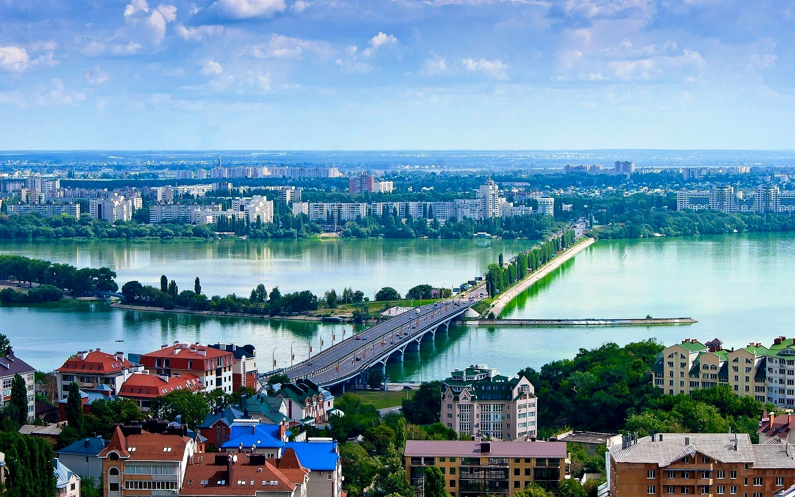

О городе

Воронеж — это удивительное сочетание исторического наследия и современной городской культуры. Здесь вы можете прогуляться по старинным улочкам, увидеть первый линейный корабль и познакомиться с легендарным Котенком с улицы Лизюкова.
Я изучаю HTML, CSS, Bootstrap и JavaScript[cite: 16].